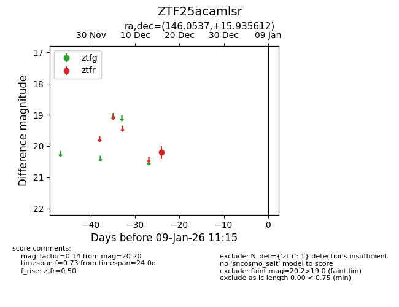
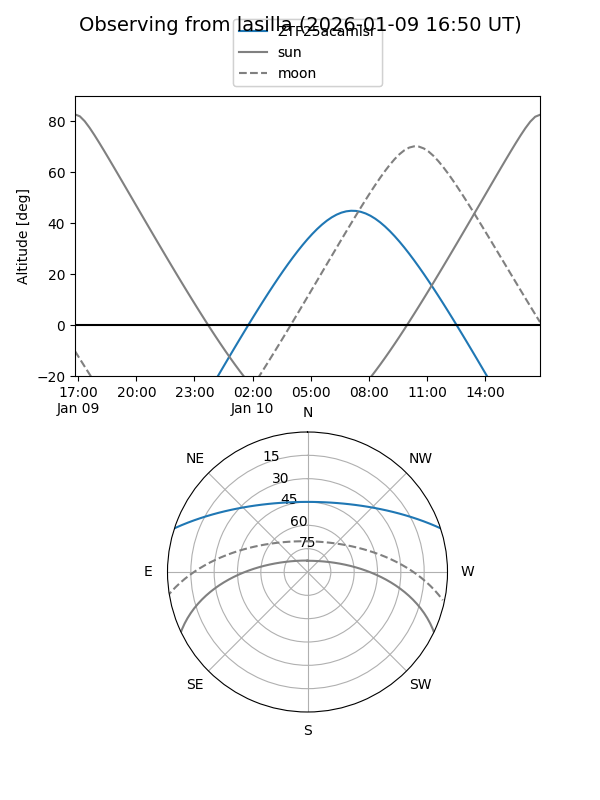

ZTF25acamlsr
Target ZTF25acamlsr at 2025-12-31 18:00
Aliases and brokers:
FINK: link
Lasair: link
ALeRCE: link
alt names
ZTF25acamlsr (ztf,fink_ztf)
Coordinates:
equatorial (ra, dec) = 146.0537,+15.93561
equatorial (HMS+DMS) = 09:44:12.88,+15:56:08.20
galactic (l, b) = (217.4799,+45.31279)
Flags:
Photometry:
last ztfr=20.20
1 ztfr detections
Lightcurve

Visibility


Additional plots